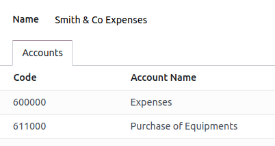
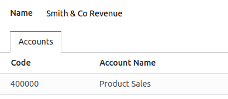
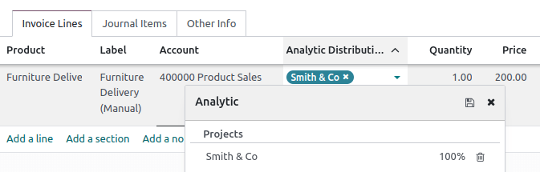
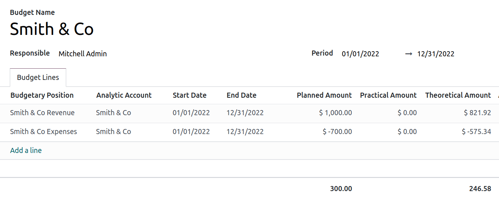

Presupuesto financiero¶
La gestión de presupuestos es una parte esencial de la gestión de una empresa. Los presupuestos ayudan a las personas a gestionar mejor cómo gastan su dinero, organizan y priorizan su trabajo para cumplir sus metas financieras. Permiten planear los resultados financieros deseados y medir el rendimiento real del plan. Odoo gestiona los presupuestos con cuentas analíticas y generales.
Configuración¶
Vaya a y habilite la función gestión de presupuesto.
Posiciones presupuestarias¶
Las posiciones presupuestarias son listas de cuentas para las que desea mantener presupuestos. Normalmente son cuentas de gastos o ingresos.
Para definir posiciones presupuestarias, vaya a y haga clic en el botón nuevo. Agregue un nombre para su posición presupuestaria y seleccione la empresa que la usará. Haga clic en agregar una línea para agregar una o más cuentas.
Nota
Cada posición presupuestaria puede tener cualquier número de cuentas del plan de cuentas, pero debe tener por lo menos una.
Caso de uso¶
Utilicemos un ejemplo.
Acabamos de iniciar un proyecto con Smith & Co. y nos gustaría hacer el presupuesto de los ingresos y gastos del proyecto. Planeamos tener un ingreso de 1000 y no queremos gastar más de 700.
Primero debemos definir qué cuentas se relacionan con los gastos de nuestro proyecto. Para hacer esto debemos ir a y hacer clic en nuevo para agregar una posición. Se deben agregar las cuentas en las que se contabilizarán los gastos.
Repetimos los pasos para crear una posición presupuestaria para los ingresos.
Cuentas analíticas¶
Odoo necesita saber qué costos o gastos son relevantes para un presupuesto específico, ya que las cuentas generales mencionadas anteriormente se pueden utilizar para distintos proyectos. Para hacer esto, debemos ir a y hacer clic en nuevo para agregar una nueva cuenta analítica llamada Smith & Co.
Se debe completar el campo plan. Los planes sirven para agrupar varias cuentas analíticas y distribuir los costos e ingresos con el fin de analizar el rendimiento de la empresa. Puede crear o configurar planes analíticos en .
Debe hacer referencia a esta cuenta analítica al crear una nueva factura de cliente o de proveedor.
Definir presupuesto¶
Primero debemos establecer nuestros objetivos. Entonces, especificamos que se espera ganar 1000 con este proyecto y no gastar más de 700. Vamos a y hacemos clic en nuevo para crear un nuevo presupuesto para el proyecto Smith & Co.
El siguiente paso es completar el nombre de presupuesto. Después, seleccionar el Periodo del presupuesto. Añadir la posición presupuestaria que se desea registrar, definir las cuentas analíticas, y agregar la cantidad prevista.
Nota
Si desea registrar una cantidad correspondiente a gastos, el número debe ser negativo.
Ver presupuesto¶
Vaya a , busque el proyecto Smith & Co y observe su evolución de acuerdo con los gastos o ingresos de la cuenta analítica correspondiente.
El importe práctico cambia cada que se crea un nuevo asiento contable relacionado con su cuenta analítica y una cuenta de su posición presupuestaria.
El importe teórico representa la cantidad monetaria que en teoría podría haber gastado o debería haber recibido según la fecha. Por ejemplo, imagine que su presupuesto es de 1200 por 12 meses (enero a diciembre) y hoy es 31 de enero. En este caso, el importe teórico será de 100 porque, en teoría, es la cantidad que debió haber ganado.